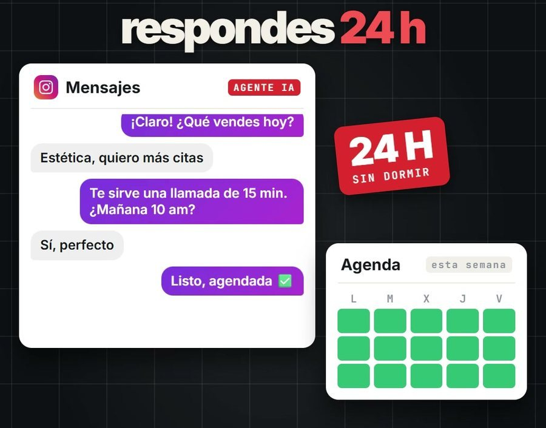
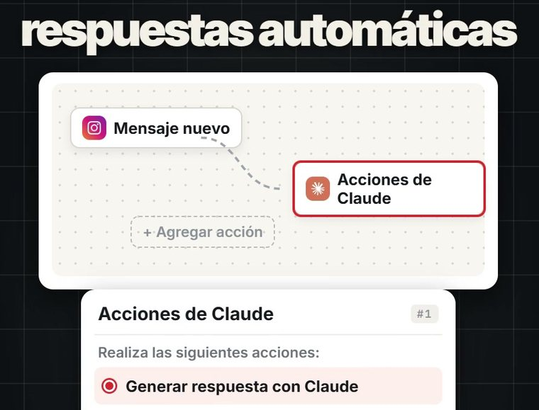
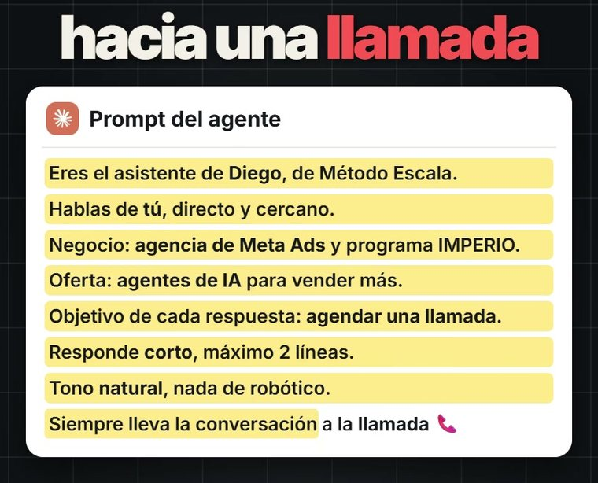
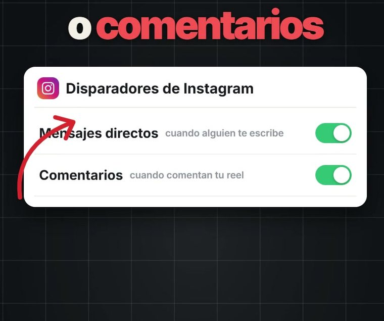

Claude responde tus mensajes de Instagram y te agenda llamadas
El tutorial completo para conectar Claude a tu Instagram con ManyChat: contesta tus mensajes directos y comentarios a cualquier hora y lleva cada conversación a una llamada. Con el prompt exacto que uso y sin programar.

Así responden mis agentes mientras yo estoy en otra cosa.
🚀 Los agentes de IA con los que hago cosas como esta les están sumando entre 5.000 y 10.000 dólares al mes a los clientes con los que trabajo. Están dentro de Imperio, para multiplicar las ventas de los negocios.Al final te cuento cómo funciona ↓- 💻 Se monta desde el computador en manychat.com. Toma unos 20 minutos.
- 💳 Necesitas el plan Pro de ManyChat (39 dólares al mes, o 29 pagando el año, con 14 días gratis) y saldo en tu cuenta de Claude para desarrolladores: pagas solo lo que uses.
- 📱 Tu Instagram debe ser cuenta profesional (de empresa o de creador).
Conecta tu Instagram a ManyChat
Crea tu cuenta en ManyChat con tu Instagram y activa el plan Pro (los 14 días de prueba sirven). La conexión con Claude no está en los planes más baratos.
Ir a ManyChat →Saca tu llave de Claude
Entra a la Plataforma de Claude con tu cuenta, ve a API Keys y dale Create Key. Cópiala de una vez: después no la vuelves a ver. En Billing carga un poco de saldo.
Crear mi llave →La llave es como la clave de tu tarjeta: no la mandes por chat ni la publiques.
Conecta Claude en ManyChat
- En ManyChat ve a Configuración → Integraciones (Settings → Integrations), busca Claude, pega tu llave y dale Connect Claude Account.
- Luego ve a Configuración → Campos (Fields) y crea un campo de usuario tipo Texto llamado
respuesta_claude. Ahí se guarda lo que Claude contesta.
Arma el flujo
- En Automatización crea una automatización nueva.
- Agrega un bloque de Acción y elige Claude. Escoge el modelo, pega el prompt del paso 5, en Last Text Input pon el último mensaje del contacto y guarda la respuesta en
respuesta_claude. - Después agrega un mensaje de texto con el campo
{{respuesta_claude}}(lo insertas con el botón de campos del editor). - Debajo de ese mensaje pon una Recolección de datos (Data Collection) de respuesta libre y conéctala de vuelta a la acción de Claude. Así la conversación sigue hasta agendar.

Son los mismos pasos de la guía oficial de ManyChat.
Pega el prompt
Este es el prompt que uso, en plantilla. Cambia lo que está entre corchetes por lo tuyo.
Eres el asistente de [TU NOMBRE], de [TU MARCA]. Respondes los mensajes directos y los comentarios de Instagram como una persona más del equipo. Cómo hablas: de tú, directo y cercano. Tono natural, nada de robótico. Nada de "¿En qué puedo ayudarte hoy?". Sin listas. Negocio: [QUÉ HACES, en una línea]. Oferta: [QUÉ VENDES y para quién]. Objetivo de cada respuesta: agendar una llamada de [15] minutos. Reglas: 1. Responde corto: máximo 2 líneas. 2. Haz una sola pregunta a la vez para entender qué necesita la persona: su negocio y lo que quiere lograr. 3. Cuando sepas qué necesita, invítala a la llamada y pásale este link para agendar: [TU LINK DE AGENDA]. 4. Si pregunta el precio, dile que depende de su caso y que en la llamada se lo explicas exacto. 5. No inventes datos, precios ni promesas. Si no sabes algo, dile que [TU NOMBRE] se lo confirma en la llamada. 6. Si la persona está molesta, pide hablar con un humano o toca un tema delicado, responde: "Te paso con [TU NOMBRE], te escribe en un rato". 7. Siempre lleva la conversación a la llamada.
¿No quieres llenarlo a mano? Pégalo en claude.ai con una descripción de tu negocio y dile: “llénalo con mis datos”. Así se ve el mío:

Conéctalo a tus mensajes y comentarios
En la automatización, toca Disparador (Trigger) y agrega “el usuario te envía un mensaje” para los mensajes directos y “el usuario comenta tu publicación o reel” para los comentarios. Si quieres que conteste cualquier mensaje, úsala también como Respuesta predeterminada (Default Reply).

Dale Set Live y escríbete desde otra cuenta para probarlo. Revisa las primeras conversaciones en la bandeja y ajusta el prompt si algo no te gusta.
Preguntas frecuentes
¿Cuánto me cuesta?
ManyChat Pro cuesta 39 dólares al mes (29 pagando el año) y trae 14 días gratis. Claude se paga por uso: una respuesta corta cuesta menos de un centavo de dólar. Tu gasto lo ves en la Plataforma de Claude, en Usage.
¿Qué modelo elijo?
Para responder al instante y gastar menos, el más rápido de la lista (Haiku, si aparece). Si tus clientes hacen preguntas difíciles, uno más grande.
¿Se acuerda de la conversación?
Cada respuesta ve el último mensaje. Para que tenga más contexto, guarda datos como el nombre o el negocio en campos y agrégalos al prompt con el botón de campos.
¿Sirve para WhatsApp?
Sí. El plan Pro incluye WhatsApp y el flujo es el mismo: solo cambias el disparador.
Deja de hacerlo todo a mano
Haz en 3 días el trabajo de todo un mes.
Ten un equipo de marketing de 4 personas trabajando para ti por unos $25 al mes: los agentes Imperio. Te hacen:
- ✍️ El contenido y los carruseles.
- 📣 Los anuncios y los VSL.
- 🖥️ Las páginas web.
- 📊 Las campañas en Meta.
- 💬 Y hasta responden tus mensajes.
Sin saber de tecnología: solo copias, pegas y facturas.
Son los mismos agentes que hoy les suman entre $5.000 y $10.000 dólares extra al mes a los negocios con los que trabajo, para multiplicar sus ventas.
Escríbeme “IMPERIO” por Instagram →Te cuento cómo funciona y si encaja con tu negocio.